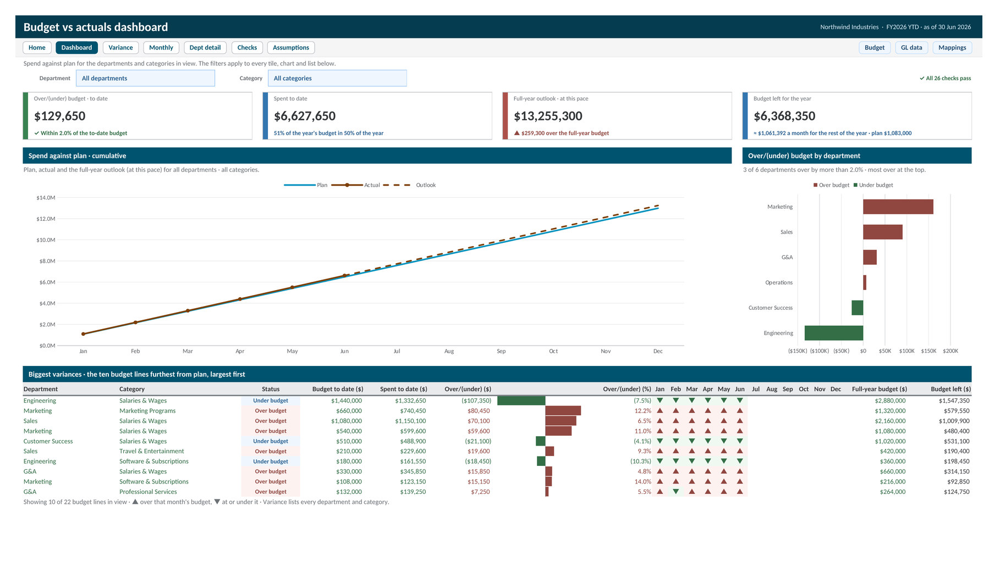

Budget vs Actuals Tracker
An eleven tab Excel workbook, with a Google Sheets version, that turns a budget export and a raw GL export into spend against plan for every department and category: budget to date, actual spend, the gap in dollars and percent, a full year outlook, and the budget left to spend. A filtered dashboard, a department drill down, and 26 built in checks sit on top.

Two exports go in: the budget, one row per department and category with twelve monthly amounts, and the GL detail, one row per transaction. A Mappings table sends every GL account to its budget category, so a new account in next month's export gets one new row instead of a broken formula. From there the workbook works out, for every department and category, the budget to date, actual spend, the gap in dollars and percent, a status against an on plan band you set, a full year outlook, and the budget left to spend.
The Dashboard filters by department and category and leads with four tiles, each with a comparison rather than a bare number: the gap to the budget to date, spend against the share of the year gone, the full year outlook against the full year budget, and budget left per month against plan. Below them, a cumulative line tracks spend against plan and projects the rest of the year, a bar chart ranks departments from most over to most under, and the ten lines furthest from plan each carry a gap bar and a strip showing which months ran over. Variance lays out every department and category with in cell gap bars and a department by category heatmap, Monthly maps the gap month by month, and Department Detail opens one department's categories, cumulative spend, and largest GL lines.
A Checks tab runs 26 tests on every refresh: reconciliations that must read zero, data quality counts for unknown departments, unmapped accounts, duplicate IDs, and spend with no budget line, coverage tests that every new department and category reaches the views, and capacity warnings before an input table fills up. Every failure says where to look. Start Here explains how each number is worked out, the five step monthly refresh, and an optional Power Query load. Every cell uses a named cell style, so inputs, formulas, links, and checks look the same on every tab.
Northwind Industries is a fictional company and every figure in this sample is illustrative. The plan runs January to December 2026 and the actuals run through June, so the outlook and the budget left show how the second half is shaping up. Set the as of date back and every view shows the year as it stood then.